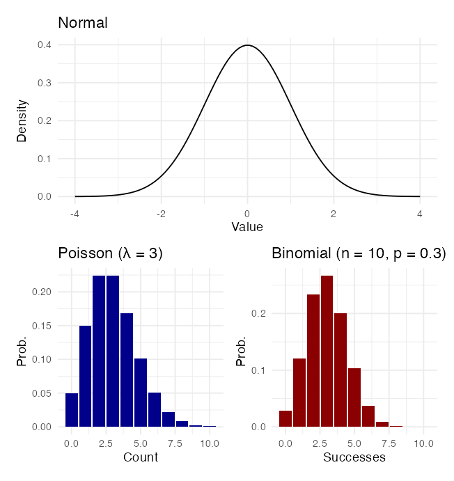
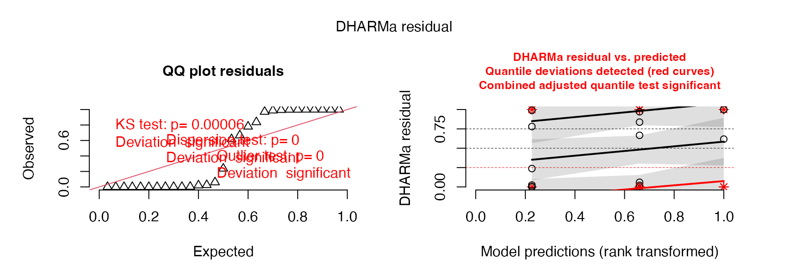
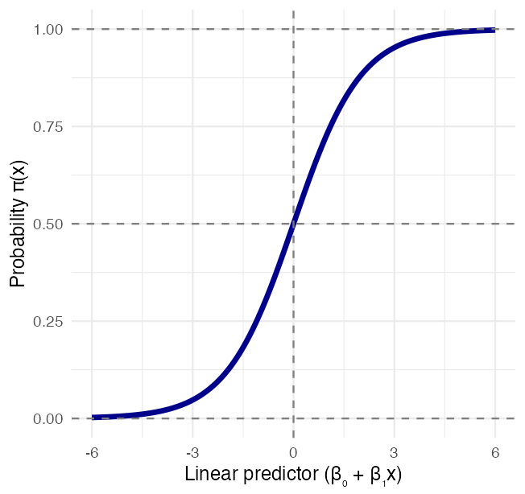
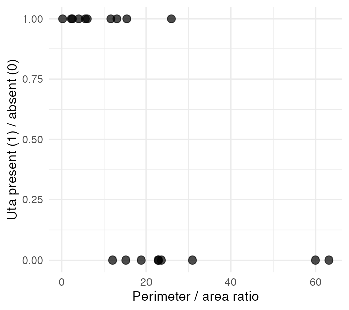
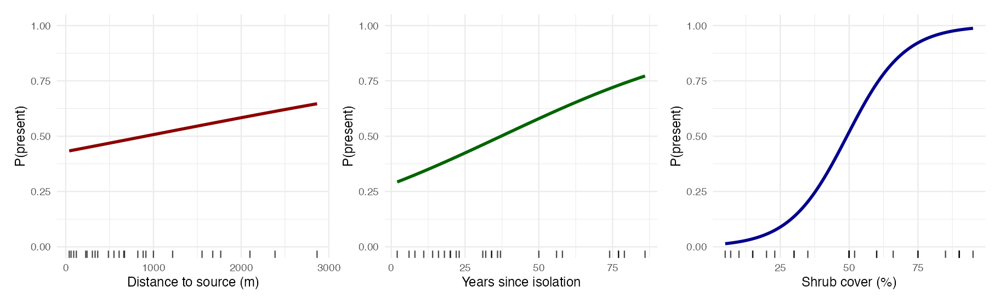

Lecture: GLM & Logistic Regression
Generalized linear models
GLM
Regression
Generalized Linear Models (GLMs) for non-normal response data — Gaussian, Poisson, and negative binomial GLMs for count data, logistic regression for binary responses, odds ratios, model diagnostics, and the connection back to ANOVA.
Part 1 · Why the Linear Model Runs Out
Where We Left Off
Three weeks of linear models:
- One-way ANOVA
- Factorial ANOVA
- Nested ANOVA
Every one of them assumed:
- Normality of the residuals
- Homogeneity of variance — Levene’s or Bartlett’s
- Independence of observations
Important
Those assumptions are about the residuals, not the raw data — but when the response is a count or a yes/no, they fail in a way no transformation fully repairs.
Today: keep the linear part, change the distribution.
The Data: Galápagos Island Biogeography
The gala data — 29 Galápagos islands, MacArthur & Wilson’s island biogeography.
| Column | What it is |
|---|---|
spp |
number of plant species — a count |
endemics |
number of endemic species — a count |
area |
island area, km² |
elevation |
maximum elevation, m |
We bin area into size_cat so the predictor is categorical — the same shape of question as week 9.
Isabela is dropped: at ~4600 km² it is 20× anything else and flattens every plot.
count(g_df, size_cat)
## size_cat n
## 1 small 11
## 2 medium 12
## 3 large 6A Count Is Not a Normal Variable
A count has three properties a normal distribution does not:
- It is a whole number
- It cannot go below zero
- Its variance grows with its mean
g_df %>%
summarise(mean_spp = mean(spp),
var_spp = var(spp),
ratio = var_spp / mean_spp)
## mean_spp var_spp ratio
## 1 76.2069 11078.46 145.3734The variance is 145× the mean. A normal distribution is free to have any variance it likes, so that ratio is not itself a violation — but look at what it does to the groups.

Warning
The spread grows with the mean. That is the equal-variance assumption breaking, and it is the signature of count data.
Fit Last Week’s Model Anyway — and Watch It Fail
lm_model <- lm(spp ~ size_cat, data = g_df)
Anova(lm_model, type = 3)
## Anova Table (Type III tests)
##
## Response: spp
## Sum Sq Df F value Pr(>F)
## (Intercept) 2298 1 0.5069 0.4828
## size_cat 192308 2 21.2064 0.00000345 ***
## Residuals 117889 26
## ---
## Signif. codes: 0 '***' 0.001 '**' 0.01 '*' 0.05 '.' 0.1 ' ' 1shapiro.test(residuals(lm_model))$p.value
## [1] 0.000240339
leveneTest(spp ~ size_cat, data = g_df)$`Pr(>F)`[1]
## [1] 0.0005878942
Important
The p-value is 0.0000035. The model did not earn it.
- Normality of residuals: p < 0.001
- Equal variance: p < 0.001
Both assumptions fail, and they fail badly — not marginally.
The question is not wrong. Island size almost certainly does drive species richness. The model being used to answer it is making promises the data does not keep.
A normal 95% interval on the small islands predicts negative species counts.
What a GLM Changes
A generalized linear model keeps the linear part — \(\beta_0 + \beta_1 X_1 + \dots\) — and swaps out two things.
| Component | What it is | Example |
|---|---|---|
| Random | the response’s distribution | Poisson for counts |
| Systematic | the predictors | size_cat, area |
| Link | connects the mean to the predictors | log for counts |
\[g(\mu) = \beta_0 + \beta_1X_1 + \beta_2X_2 \dots\]
GLMs are fitted by maximum likelihood (ML), not ordinary least squares (OLS) — which is why their output talks about deviance rather than sums of squares.

Choosing the Family and the Link
What the response looks like
| Response | Family |
|---|---|
| continuous, symmetric | gaussian — this is lm() |
| counts | poisson |
| counts, variance > mean | negative binomial (glm.nb) |
| binary — present/absent | binomial(link = "logit") |
| positive, continuous, skewed | Gamma |
The link function
| Distribution | Link | Formula |
|---|---|---|
| Normal | Identity | \(g(\mu) = \mu\) |
| Poisson | Log | \(g(\mu) = \log(\mu)\) |
| Binomial | Logit | \(g(\mu) = \log[\mu/(1-\mu)]\) |
| Gamma | Log | \(g(\mu) = \log(\mu)\) |
Tip
The link is what keeps predictions possible. A log link cannot predict a negative count. A logit link cannot predict a probability above 1.
Part 2 · Gaussian GLMs — the Sanity Check
Before Trusting glm(), Check It Against What You Know
Before handing glm() an unfamiliar distribution, confirm it reproduces the model you already trust.
A Gaussian family with an identity link is a linear model — same estimates, same standard errors, same p-values. If that does not come out identical, you have mis-specified something.
Note
You are not learning a new model. You are learning two arguments on the one you already have: family = and link =. Everything that follows today changes exactly those two.
Gaussian GLM — Same Model, Two Function Calls
gauss_model <- glm(spp ~ size_cat,
data = g_df,
family = gaussian(link = "identity"))
round(cbind(lm = coef(lm_model),
glm = coef(gauss_model)), 6)
## lm glm
## (Intercept) 14.45454 14.45454
## size_catmedium 40.62879 40.62879
## size_catlarge 217.21212 217.21212all.equal(coef(lm_model), coef(gauss_model))
## [1] TRUEAnova(gauss_model, type = "III", test = "F")
## Analysis of Deviance Table (Type III tests)
##
## Response: spp
## Error estimate based on Pearson residuals
##
## Sum Sq Df F values Pr(>F)
## size_cat 192308 2 21.206 0.00000345 ***
## Residuals 117889 26
## ---
## Signif. codes: 0 '***' 0.001 '**' 0.01 '*' 0.05 '.' 0.1 ' ' 1Identical to the Anova() on lm_model from Part 1 — F = 21.21, p = 0.0000035, and identical for the same reason: it is that model.
Gaussian GLM — Reading the New Vocabulary
## GLM summary says value ANOVA calls it
## 1 Dispersion parameter 4534.2 Residual mean square
## 2 Null deviance 310196.8 SS total
## 3 Residual deviance 117889.0 SS residual
## 4 null - residual 192307.8 SS size_catA GLM summary renames three things you already know:
Dispersion parameter — for a Gaussian GLM this is the residual variance, \(\sigma^2\). It is the ANOVA table’s residual mean square.
Null deviance — the error left when you predict every island with the grand mean alone. For a Gaussian GLM this is SStotal.
Residual deviance — the error left after fitting
size_cat. For a Gaussian GLM this is SSresidual.
Important
Null deviance − residual deviance = the model sum of squares. The residual deviance is the part your predictor did not explain.
Part 3 · Poisson GLMs for Count Data
The Poisson Distribution and Its One Strong Claim
Poisson is the distribution for counts:
- Number of species on an island
- Number of parasites in a host
- Number of nests in a plot
It assumes:
- Counts are non-negative integers
- Events occur independently
- The mean equals the variance
That third one is not a convenience. Poisson has only one parameter, λ, which is simultaneously its mean and its variance. You do not get to set them separately.
Warning
Remember the ratio. The variance of spp is 145× its mean.
Poisson insists that ratio is 1.
Fit it anyway — the failure is the content.
Tip
Why log is the link. \(\log(\mu)\) runs from −∞ to +∞, so the linear predictor can be any number at all and \(\mu = e^{\eta}\) is still positive. Counts can never come out negative.
Fitting the Poisson GLM
poiss_model <- glm(spp ~ size_cat,
data = g_df,
family = poisson(link = "log"))
round(summary(poiss_model)$coefficients, 4)
## Estimate Std. Error z value Pr(>|z|)
## (Intercept) 2.6710 0.0793 33.6804 0
## size_catmedium 1.3378 0.0883 15.1460 0
## size_catlarge 2.7743 0.0837 33.1387 0The model predicts the natural log of the expected count, so exponentiate to read it:
- \(e^{2.671} = 14.5\) species on a small island
- \(e^{1.338} = 3.81\) — a medium island has 3.8× the species of a small one
- \(e^{2.774} = 16.0\) — a large island has 16× the species of a small one
Important
With a log link, coefficients are multiplicative, not additive. A coefficient of β multiplies the mean by \(e^{\beta}\).
Testing the Effect — Why LR and Not F
Anova(poiss_model, type = "III", test = "LR")
## Analysis of Deviance Table (Type III tests)
##
## Response: spp
## LR Chisq Df Pr(>Chisq)
## size_cat 2133.2 2 < 0.00000000000000022 ***
## ---
## Signif. codes: 0 '***' 0.001 '**' 0.01 '*' 0.05 '.' 0.1 ' ' 1An ANOVA F-test is a ratio of variances, and its denominator is the residual mean square — an estimate of \(\sigma^2\).
A Poisson GLM never estimates a \(\sigma^2\). The variance is not a free parameter; it is pinned to the mean. There is nothing to put in the denominator.
So we use a likelihood ratio (LR) test instead: fit the model with
size_catand the model without it, and compare how much better the full model explains the data.
\[\text{LR } \chi^2 = 2(\log L_{full} - \log L_{reduced})\]
Hold on to that 2133.2. It is about to shrink by a factor of 43.
Three Ways to Say “Log” — and Why They Differ
| Model | R code | Interpretation of β₁ |
|---|---|---|
| GLM, log link | glm(Y ~ X, family = poisson) |
A 1-unit change in X multiplies the mean of Y by \(e^{\beta_1}\) |
| lm on logged Y | lm(log(Y) ~ X) |
A 1-unit change in X multiplies the median of Y by \(e^{\beta_1}\) |
| log-log | lm(log(Y) ~ log(X)) |
A 1% change in X gives a β₁% change in Y |
Important
These are not the same model. A GLM with a log link models the log of the mean, \(\log(E[Y])\). Logging the response models the mean of the log, \(E[\log(Y)]\) — which back-transforms to a geometric mean, not an arithmetic one. The GLM also never has to decide what to do with a zero count.
Part 4 · Overdispersion and the Negative Binomial
Checking Dispersion — the Test That Matters
The dispersion parameter is observed variance over expected variance:
\[\hat\phi = \frac{\sum \text{(Pearson residual)}^2}{\text{residual df}}\]
- ≈ 1 — good fit, variance = mean
- > 1 — overdispersion, variance > mean
- < 1 — underdispersion
check_overdispersion(poiss_model)
## # Overdispersion test
##
## dispersion ratio = 33.525
## Pearson's Chi-Squared = 871.642
## p-value = < 0.001
Warning
Dispersion ratio 33.5, not 1.
The model is claiming the variance of a large island’s species count is about 232 — because Poisson forces variance = mean. The data say it is 20,400.
⚠️
shapiro.test(residuals(poiss_model))will run, and give you a number. The number is meaningless — normality of raw residuals is not a Poisson assumption.R will not stop you running a test that does not apply. Check the diagnostic that matches the model, not the one you remember.
The DHARMa Residual Check

Ordinary GLM residuals are hard to read. DHARMa simulates from the fitted model and asks where each observation falls in its own predicted distribution — if the model is right, those are uniform. Here they are not, and the problem is not subtle.
The Negative Binomial — a Second Parameter
The negative binomial adds theta (θ), which lets the variance exceed the mean by as much as it needs to:
\[\operatorname{Var}(Y) = \mu + \frac{\mu^2}{\theta}\]
As θ → ∞ this collapses back to the Poisson. A small θ means a lot of extra spread.
nb_model <- glm.nb(spp ~ size_cat, data = g_df)
c(theta = nb_model$theta)
## theta
## 1.660219
check_overdispersion(nb_model)
## # Overdispersion test (using simulated residuals)
##
## dispersion ratio = 0.586
## p-value = 0.632Anova(nb_model, type = "III", test = "LR")
## Analysis of Deviance Table (Type III tests)
##
## Response: spp
## LR Chisq Df Pr(>Chisq)
## size_cat 49.858 2 0.00000000001491 ***
## ---
## Signif. codes: 0 '***' 0.001 '**' 0.01 '*' 0.05 '.' 0.1 ' ' 1
AIC(poiss_model, nb_model)
## df AIC
## poiss_model 3 1057.1686
## nb_model 4 283.9725
Note
The dispersion is gone, and the AIC drops by 773. Same data, same predictor, same link — the only thing added was permission for the variance to be larger than the mean.
What Overdispersion Did to Your p-Value
## estimate SE_poisson SE_negbin
## (Intercept) 2.6710 0.079 0.247
## size_catmedium 1.3378 0.088 0.336
## size_catlarge 2.7743 0.084 0.403| Poisson | Negative binomial | |
|---|---|---|
size_cat LR χ² |
2133.2 | 49.9 |
| dispersion ratio | 33.5 | 0.59 |
| AIC | 1057.2 | 284.0 |
Important
Every coefficient is identical to four decimal places.
The two models put the means in exactly the same place. What changed is the standard errors — the Poisson’s are 3× to 5× too small, and the LR χ² is inflated 43-fold.
Overdispersion does not move your estimate. It makes you far more confident in it than you are entitled to be — smaller SEs, bigger test statistics, narrower intervals, smaller p-values.
Both models here say p < 0.001. The conclusion did not change. Only the honesty of it did — and that is still worth getting right, because the next dataset will be the one where it flips.
Estimated Marginal Means on the Count Scale
nb_emm <- emmeans(nb_model, ~ size_cat,
type = "response")
nb_emm
## size_cat response SE df asymp.LCL asymp.UCL
## small 14.5 3.57 Inf 8.91 23.5
## medium 55.1 12.50 Inf 35.27 86.0
## large 231.7 73.70 Inf 124.22 432.0
##
## Confidence level used: 0.95
## Intervals are back-transformed from the log scaletype = "response" back-transforms from the log scale, which is why the confidence limits are not symmetric around each mean — the interval was symmetric on the log scale, and exponentiating stretches the upper half.
## size_cat response SE df asymp.LCL asymp.UCL .group
## small 14.5 3.57 Inf 8.91 23.5 a
## medium 55.1 12.50 Inf 35.27 86.0 b
## large 231.7 73.70 Inf 124.22 432.0 c
##
## Confidence level used: 0.95
## Intervals are back-transformed from the log scale
## P value adjustment: tukey method for comparing a family of 3 estimates
## Tests are performed on the log scale
## significance level used: alpha = 0.05
## NOTE: If two or more means share the same grouping symbol,
## then we cannot show them to be different.
## But we also did not show them to be the same.Poisson vs. Negative Binomial, Drawn

The means land on top of each other. Only the intervals differ.
For the large islands:
- Poisson: 232 (220 – 244)
- Negative binomial: 232 (124 – 432)
The Poisson interval is 24 species wide and excludes most of the observed data. The negative binomial interval is 308 species wide and actually contains it.
Tip
Report the one whose diagnostics pass, not the one with the smaller p-value.
Part 5 · Logistic Regression
A Binary Response Is the Other Kind of Non-Normal
A count was one kind of non-normal response. A yes/no is another — dead/alive, present/absent, infected/healthy.
Logistic regression models the probability that Y = 1:
\[\pi(x) = \frac{e^{\beta_0 + \beta_1 x}}{1 + e^{\beta_0 + \beta_1 x}}\]
The logit link stretches probability — stuck between 0 and 1 — onto a scale that runs from −∞ to +∞:
\[g(x) = \log\left(\frac{\pi(x)}{1-\pi(x)}\right) = \beta_0 + \beta_1 x\]
The thing inside the log, \(\pi/(1-\pi)\), is the odds. So the linear model is a model of log-odds.
Note
Gotelli & Ellison, A Primer of Ecological Statistics, Ch. 11 — The Analysis of Categorical Data, for logistic regression and binomial GLMs.

The Polis Lizard Data
Polis et al. (1998) recorded whether the lizard Uta was present on 19 islands in the Gulf of California, against each island’s perimeter-to-area ratio — a measure of how exposed its shoreline is.
polis_df %>%
dplyr::select(island, paratio, uta, pa) %>%
head(5)
## # A tibble: 5 × 4
## island paratio uta pa
## <chr> <dbl> <chr> <dbl>
## 1 Bota 15.4 P 1
## 2 Cabeza 5.63 P 1
## 3 Cerraja 25.9 P 1
## 4 Coronadito 15.2 A 0
## 5 Flecha 13.0 P 1
count(polis_df, uta)
## # A tibble: 2 × 2
## uta n
## <chr> <int>
## 1 A 9
## 2 P 10
Note
These are the data from the paper, as reproduced in Quinn & Keough Box 13-1 — the same file the activity uses.
Fitting the Logistic Model
lizard_model <- glm(pa ~ paratio,
data = polis_df,
family = binomial(link = "logit"))
round(summary(lizard_model)$coefficients, 4)
## Estimate Std. Error z value Pr(>|z|)
## (Intercept) 3.6061 1.6953 2.1272 0.0334
## paratio -0.2196 0.1005 -2.1842 0.0289Two ways to test \(H_0: \beta_1 = 0\):
- Wald test — estimate / SE, the
zcolumn above - Likelihood ratio test — compare the full model to one with no predictor
null_model <- glm(pa ~ 1, data = polis_df,
family = binomial(link = "logit"))
anova(null_model, lizard_model, test = "Chisq")
## Analysis of Deviance Table
##
## Model 1: pa ~ 1
## Model 2: pa ~ paratio
## Resid. Df Resid. Dev Df Deviance Pr(>Chi)
## 1 18 26.287
## 2 17 14.221 1 12.066 0.0005134 ***
## ---
## Signif. codes: 0 '***' 0.001 '**' 0.01 '*' 0.05 '.' 0.1 ' ' 1The LR test is the one to report — it is better behaved at small n, and 19 islands is small.
The Fitted Probability Curve

The curve crosses p = 0.5 at a perimeter-to-area ratio of
\[-\frac{\beta_0}{\beta_1} = -\frac{3.606}{-0.2196} = 16.4\]
Below that, Uta is more likely present than absent; above it, more likely absent.
Tip
The curve is the link doing its job. A straight line would have crossed below zero on the right of this plot and predicted a negative probability.
Interpreting the Odds Ratio
exp(coef(lizard_model))
## (Intercept) paratio
## 36.8210344 0.8028734
exp(confint(lizard_model, "paratio"))
## 2.5 % 97.5 %
## 0.6157322 0.9356727Odds ratio = \(e^{\beta_1}\)
- > 1 — raising the predictor raises the odds
- < 1 — raising the predictor lowers the odds
- = 1 — no effect
Here the odds ratio is 0.803:
- One extra unit of perimeter-to-area ratio multiplies the odds of finding Uta by 0.80
- That is a 19.7% drop in the odds per unit (1 − 0.803)
- The CI is 0.616 to 0.936 — entirely below 1, so the relationship is negative
Important
For an odds ratio the null value is 1, not 0 — it lives on a multiplicative scale. A CI that excludes 1 is the significant one.
Assessing Model Fit
# McFadden's, by hand
1 - lizard_model$deviance /
lizard_model$null.deviance
## [1] 0.4590197
r2(lizard_model) # performance's default
## # R2 for Logistic Regression
## Tjur's R2: 0.521
hoslem.test(lizard_model$y,
fitted(lizard_model), g = 10)
##
## Hosmer and Lemeshow goodness of fit (GOF) test
##
## data: lizard_model$y, fitted(lizard_model)
## X-squared = 7.898, df = 8, p-value = 0.4435McFadden’s pseudo-R² = \(1 - \dfrac{D_{resid}}{D_{null}}\) = 0.459. performance::r2() instead reports Tjur’s R² = 0.521.
Both are “pseudo” because there is no residual variance to partition — the response is 0 or 1, so “proportion of variance explained” has nothing to be a proportion of. They are different quantities, so say which one you report. For McFadden’s, treat 0.2–0.4 as a strong model, not the 0.7 you would want from a regression.
Warning
Hosmer–Lemeshow runs backwards. Its null hypothesis is that the model fits. You want p large. Here p = 0.44, so there is no evidence of poor fit.
That is the opposite of every test you have run this semester — and it is why a “non-significant” result is not always bad news.
Part 6 · Multiple Logistic Regression
The Bolger Canyon Fragment Data
Logistic regression extends to several predictors exactly as regression does:
\[g(x) = \beta_0 + \beta_1 x_1 + \beta_2 x_2 + \ldots + \beta_p x_p\]
Bolger et al. (1997) recorded whether native rodents were present in 25 canyon fragments in coastal southern California, against three predictors.
| Column | What it is |
|---|---|
rodentsp |
1 = rodents present, 0 = absent |
pershrub |
% shrub cover |
distx |
distance to source canyon, m |
age |
years since isolation |
rodent_model <- glm(
rodentsp ~ distx + age + pershrub,
data = bolger_df,
family = binomial(link = "logit"))
round(summary(rodent_model)$coefficients, 4)
## Estimate Std. Error z value Pr(>|z|)
## (Intercept) -5.9099 3.1125 -1.8987 0.0576
## distx 0.0003 0.0008 0.3988 0.6900
## age 0.0250 0.0377 0.6640 0.5067
## pershrub 0.0959 0.0406 2.3606 0.0182
Note
Quinn & Keough Box 13-2. Two predictors measure isolation (distx, age); one measures habitat quality (pershrub).
Testing Each Predictor
Anova(rodent_model, type = "II", test = "LR")
## Analysis of Deviance Table (Type II tests)
##
## Response: rodentsp
## LR Chisq Df Pr(>Chisq)
## distx 0.1559 1 0.692943
## age 0.4446 1 0.504906
## pershrub 9.5577 1 0.001991 **
## ---
## Signif. codes: 0 '***' 0.001 '**' 0.01 '*' 0.05 '.' 0.1 ' ' 1Each row drops one predictor and compares the two models by likelihood ratio — the multi-predictor version of what we did to the lizard model.
## OR 2.5 % 97.5 %
## distx 1.0003 0.9986 1.0019
## age 1.0253 0.9495 1.1123
## pershrub 1.1006 1.0311 1.2249
Important
Shrub cover is the only one that matters. Each extra percentage point of shrub cover multiplies the odds of rodent presence by 1.10 (CI 1.03–1.22).
Neither isolation measure comes close — and both of their CIs bracket 1.
Visualizing Each Effect

Each panel moves one predictor across its observed range and holds the other two at their means. Only shrub cover takes the probability from near 0 to near 1.
Model Comparison and Selection
## Model k AIC Deviance
## 1 Shrub only 2 24.05 20.05
## 2 No distance 3 25.51 19.51
## 3 No age 3 25.80 19.80
## 4 Full 4 27.36 19.36
## 5 No shrub 3 34.92 28.92
## 6 Intercept only 1 36.62 34.62- Likelihood ratio tests compare nested models — one must be a special case of the other
- AIC / BIC compare any models fitted to the same data, nested or not
- AIC rewards fit and penalises parameters: \(AIC = -2\log L + 2k\)
Note
Dropping distx or age improves the AIC — they were costing a parameter each and buying almost nothing. Dropping pershrub makes it far worse.
How Well Does It Classify?
pred_prob <- predict(rodent_model, type = "response")
pred_class <- ifelse(pred_prob > 0.5, 1, 0)
cm <- table(Predicted = pred_class,
Actual = bolger_df$rodentsp)
cm
## Actual
## Predicted 0 1
## 0 11 3
## 1 2 9
round(c(accuracy = sum(diag(cm)) / sum(cm),
sensitivity = cm["1","1"] / sum(cm[, "1"]),
specificity = cm["0","0"] / sum(cm[, "0"])), 3)
## accuracy sensitivity specificity
## 0.800 0.750 0.846- Accuracy — fraction of fragments called correctly
- Sensitivity — of the fragments that had rodents, how many did we catch?
- Specificity — of the fragments that did not, how many did we correctly rule out?
Warning
The 0.5 cut-off is a choice, not a result. Move it and sensitivity and specificity trade against each other. Classification accuracy is also optimistic here — we are scoring the model on the same 25 fragments we fitted it to.
Publication-Quality Figure

What makes this publishable rather than exploratory:
- The raw data are visible under the fit, jittered just enough to separate ties
- The confidence band is on the probability scale, computed on the link scale and back-transformed — so it can never leave [0, 1]
- Axis labels name the units, not the column names
- The other two predictors are held at their means, and the caption must say so
This is the shape of the graded figure in section 10 of the activity.
Scientific Write-Up — Results
ImportantResults
The presence of native rodents in 25 canyon fragments was modelled by multiple logistic regression with three predictors: distance to the nearest source canyon, years since isolation, and percentage shrub cover. The three predictors together improved substantially on the null model (likelihood-ratio χ² = 15.26, df = 3, p = 0.002; McFadden’s R² = 0.44).
Shrub cover was the only predictor with a detectable effect (β = 0.096, SE = 0.041, LR χ² = 9.56, df = 1, p = 0.002). Each additional percentage point of shrub cover multiplied the odds of rodent presence by 1.10 (95% CI 1.03–1.22). Neither distance to the source canyon (LR χ² = 0.16, p = 0.69) nor years since isolation (LR χ² = 0.44, p = 0.50) was distinguishable from zero.
The model classified 80% of fragments correctly (sensitivity 0.75, specificity 0.85) and showed no evidence of lack of fit (Hosmer–Lemeshow χ² = 6.04, df = 8, p = 0.64).
Scientific Write-Up — Discussion
ImportantDiscussion
Vegetation structure, not isolation, predicted whether native rodents persisted in these canyon fragments. Shrub cover is plausibly acting as both food and cover from predators, and the effect is large enough to matter on the ground: holding distance and age at their means, a fragment at 70% shrub cover has an 88% chance of retaining its rodents, against 6% for one at 20%.
The two isolation measures showed no detectable relationship. With 25 fragments, failing to detect an effect is not the same as showing there is none — but the AIC comparison points the same way, since dropping either one improved the model. The practical reading is that within this range of fragment ages and distances, habitat quality dominates.
Part 7 · Diagnostics and Assumptions
Assumptions of Logistic Regression
- Independence of observations
- Linearity between each predictor and the log odds — not the probability
- No extreme outliers or high-leverage points
- No multicollinearity among predictors
- Enough data per parameter — a rough rule is 10 events per predictor
Warning
Assumption 2 is the one people forget. Logistic regression does not assume a linear relationship with the probability — the curve is S-shaped by construction. It assumes linearity on the logit scale.

Bin each predictor, compute the empirical log-odds in each bin, and look for a straight line. Shrub cover is close to one; with 25 fragments these are rough.
Which Diagnostic for Which Family
| Family | What it assumes | What to check |
|---|---|---|
| All GLMs | Independence; correct link; no extreme leverage | DHARMa residuals, Cook’s distance, VIF |
| Gaussian | Normal residuals, equal variance | shapiro.test(), Levene’s, residual plots |
| Poisson | Counts; variance = mean | check_overdispersion(), testDispersion() |
| Negative binomial | Counts; variance = \(\mu + \mu^2/\theta\) | check_overdispersion(), DHARMa |
| Binomial / logistic | Binary response; linear on the logit scale; enough events | Binned log-odds plot, Hosmer–Lemeshow, separation warnings |
Important
Check the diagnostic that matches the model you fitted, not the one you learned first. shapiro.test() on Poisson residuals will give you a number, and the number will mean nothing.
Part 8 · GLMs, ANOVA, and Wrap-Up
One-Way ANOVA Is a Gaussian GLM
Every linear model you have fitted this semester is the special case of a GLM where:
- The response is normal
- The link is the identity
So a one-way ANOVA, a linear regression on a categorical predictor, and a Gaussian GLM are three names for one fit.
aov_fit <- aov(spp ~ size_cat, data = g_df)
lm_fit <- lm(spp ~ size_cat, data = g_df)
glm_fit <- glm(spp ~ size_cat, data = g_df,
family = gaussian(link = "identity"))round(cbind(aov = coef(aov_fit),
lm = coef(lm_fit),
glm = coef(glm_fit)), 4)
## aov lm glm
## (Intercept) 14.4545 14.4545 14.4545
## size_catmedium 40.6288 40.6288 40.6288
## size_catlarge 217.2121 217.2121 217.2121
c(aov = summary(aov_fit)[[1]][1, "F value"],
lm = anova(lm_fit)[1, "F value"])
## aov lm
## 21.2064 21.2064
Note
Identical coefficients, identical F. GLMs did not replace the ANOVA — they contain it.
Summary — What a GLM Gives You
- Gaussian + identity link = the linear model and ANOVA you already know
- Poisson + log link = counts — and always check the dispersion
- Negative binomial = counts whose variance exceeds the mean, which in ecology is most of them
- Binomial + logit link = binary responses, read as odds ratios
What they share: the linear predictor is unchanged. You are still fitting a straight line — just on a scale where a straight line cannot predict something impossible.
Important
The method, not the models
Fit it → check the diagnostic that matches the model → change one assumption → refit.
Today that chain ran three times on one question and gave three different p-values, all of them tiny. The number was never the problem. What changed was whether you were entitled to it.
Note
Up next — Linear Mixed Models
The thing you change next week is not the distribution but the error structure: random effects, and the nested designs from week 9 done properly.
Summary — Choosing a Distribution and Link
- Look at the response first — is it continuous, a count, or a yes/no? That picks the family.
- Let the family pick the link unless you have a reason not to.
- Fit it, then run the diagnostic that belongs to that family.
- For counts, check overdispersion every time. It inflates significance and never warns you.
- Compare candidate families with AIC and with DHARMa residuals, not with whichever gives the smaller p.
- Report on the response scale — counts and probabilities, not log and logit — using
emmeans(type = "response")or an odds ratio.
Readings
- Gotelli & Ellison, Ch. 9 — Regression, for extending the linear model beyond ordinary least squares.
- Gotelli & Ellison, Ch. 11 — The Analysis of Categorical Data, for logistic regression and binomial GLMs.
- Whitlock & Schluter, Ch. 17 — Regression, §“Logistic regression”, for the binary-response case.
- Quinn & Keough (2002), Experimental Design and Data Analysis for Biologists, Ch. 13 — Generalized Linear Models and Logistic Regression. This is the source of both worked examples today.
Note
📖 On the datasets
The Uta lizard data are Polis et al.’s, reproduced in Quinn & Keough Box 13-1. The canyon rodent data are Bolger et al.’s, reproduced in Box 13-2. The Galápagos data ship with the faraway package.
The textbook PDFs are on Canvas.
Tip
🖐 Beyond the books
Zuur et al. (2009), Mixed Effects Models and Extensions in Ecology with R, Ch. 9, is the standard ecological reference for overdispersion and the negative binomial.
References
- Bolger, D. T., Alberts, A. C., Sauvajot, R. M., Potenza, P., McCalvin, C., Tran, D., Mazzoni, S., & Soulé, M. E. (1997). Response of rodents to habitat fragmentation in coastal southern California. Ecological Applications, 7(2), 552–563.
- Hosmer, D. W., & Lemeshow, S. (2000). Applied Logistic Regression (2nd ed.). Wiley, New York.
- McCullagh, P., & Nelder, J. A. (1989). Generalized Linear Models (2nd ed.). Chapman and Hall, London.
- Polis, G. A., Hurd, S. D., Jackson, C. T., & Piñero, F. S. (1998). Multifactor analysis of ecosystem patterns on islands in the Gulf of California. Ecological Monographs, 68, 490–502.
- Quinn, G. P., & Keough, M. J. (2002). Experimental Design and Data Analysis for Biologists. Cambridge University Press.